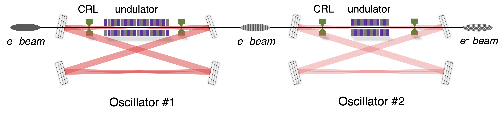

Cheng-Ying Tsai
我近期的研究兴趣为高亮度电子束的传输动力学与加速器系统中的尾场/阻抗的计算，特别是束流集体不稳定性、电子相干辐射机制研究，与中低能束流空间电荷效应等问题。研究方法倾向于根据相应的物理模型建立解析或半解析理论，利用全数值方法如粒子追踪模拟(particle tracking)或粒子网格模拟(particle in cell)等比较并验证理论的正确性。目前感兴趣的课题包含，但不限于，高亮度(高电流、低能散、低发散度)电子在直线(linac)或能量循环/回收型(recirculation/energy-recovery-linac, ERL)，及储存环(storage ring)、稳态微聚束储存环(steady state microbunching, SSMB)等加速器系统中的(集体)动力学，超快电子衍射/显微(ultrafast electron diffraction/microscope, UED/M)成像装置中的电子动力学问题，与自由电子激光理论(free-electron laser, FEL)理论等。
对加速器动力学相关课题感兴趣的同学，中高年级本科生或即将就读硕、博研究生的同学，欢迎联系。邮件标题或内容请提及关键字。
I work on accelerator physics at SEEE of of HUST, Wuhan. My research interests are high-brightness electron beam dynamics, including, not limited to, collective effects in linear accelerators, storage rings, and recirculating accelerators (energy recovery linac, ERL), free-electron lasers (FEL), low-energy space-charge beam dynamics (e.g., ultrafast electron diffraction, UED/M), steady-state microbunching (SSMB).
News
Recent Projects
To be updated...
This is an interesting and ongoing topic, with original idea from (and recently collaborated with) Y. Zhang (JLab). Generating an x-ray free electron laser (FEL) requires a high brightness electron beam from a big, complex and expensive multi-GeV linear RF accelerator. To produce multiple x-ray FEL beams, the linac electron beam must be shared to enable one beam driving a single undulator. This results in low average electron current and compromised FEL performance. Recently, a concept of multiple x-ray FEL beams driven by one common electron beam was proposed, which enables substantial reduction of required equipment and improvement of productivity. In this paper, we present a simulation study to demonstrate this innovative concept could work. The system consists of two oscillator-type x-ray FEL devices arranged side-by-side and one electron beam passing through them. As such, the second, downstream x-ray FEL oscillator is driven by electron bunches already been used once while the first x-ray FEL oscillator always receives fresh electron bunches from the linac. The simulations were based on the 1-D FEL model. The study shows that lasing could be achieved for both x-ray FEL oscillators, their radiation field intensities at saturation can be comparable, thus meet demanding needs of users. The concept also enables a potential application using a circulator ring such that an oscillator can be driven alternately by fresh electron bunches from the linear accelerator and used bunches in the circulator ring.
Short-wavelength single-pass free electron lasers (FEL) are capable of generating transverse-coherent and high-power radiations. Compared with the self-amplified spontaneous emission (SASE) FEL scheme, seeded FEL schemes can, in principle, improve the longitudinal coherence of radiation pulses. In recent years, the research community has pursued the realization of high-repetition-rate (MHz) and high-average-power (kW) seeded FELs. To alleviate the requirements of external seeding lasers, many novel seeding schemes have been proposed, which are currently limited by the state-of-the-art laser systems. An analytical study of a recently proposed seeding scheme based on direct-amplification-enabled harmonic generation (DEHG) is presented herein. In contrast to the complete numerical simulations and optimization design, this study starts from one-dimensional FEL equations of motion and derives an analytical formula for the harmonic bunching factor at the chicane exit after the electron beam traverses the modulator undulator. Additionally, to obtain a quick estimate of downstream high-gain FEL performance, we constructed a linear high-gain FEL transport matrix, including the three-dimensional effects incorporated by the Ming-Xie formula. As an application of the analytical formulas, we discuss three different cases for designing and optimizing the seeding scheme. We expect this analytical approach to shed light on seeding designs that aim to produce the desired high-brightness mirobunched electron beam.

It has been known that a high-brightness electron beam emits broadband synchrotron radiation when traversing a curved orbit. The radiation reaction at wavelengths comparable to the bunch length or to the wavelength of a phase space modulated beam may lead to collective instabilities. In this paper, we investigate a potential single-pass instability mechanism of coherent-radiation-induced longitudinal multibunch beam breakup (BBU) instability in the presence of a closely spaced microbunch train in an undulator, particularly when the microbunch spacing is close to the resonant wavelength of the undulator. This problem is formulated based on the macroparticle model together with the slippage constraint on the beam-wave interaction. The set of coupled differential equations for individual microbunches can be solved analytically for the first few microbunches with linearization of the coherent radiation wakefield, and numerically in general nonlinear cases for unequal spacing or nonuniform filling charges. The underlying mechanisms, including the slippage effect, the potential-well effect leading to extra focusing, dependence of microbunch spacing and filling patterns, are discussed. The analysis is then applied to the recently proposed steady-state microbunching (SSMB) mechanism with two examples serving for the high average coherent radiation power sources for extreme ultraviolet (EUV) and infrared wavelength regions. For the specific scenario considered in this paper, it is found that when the microbunch spacing is close to the fundamental resonant wavelength, the coherent radiation can provide extra longitudinal focusing for the individual microbunches, leading to more stable multibunch oscillations. For the preliminary nominal SSMB designs with the average beam current of 1 A, our studies show that the single-pass longitudinal BBU instability should not be a severe issue.

Recently a mechanism of storage ring operation based on the steady-state microbunching has been proposed and investigated, which contains a laser cavity modulator providing the longitudinal focusing for the circulating microbunches. In this paper we analyze the impact of the coherent undulator radiation on the longitudinal single-bunch multi-turn collective dynamics, exploring a new possible instability mechanism. We formulate the multi-turn equations of motion for the single microbunch as two sets of difference equations in the modulator and in the remaining storage ring. The dispersion equation can then be obtained by introduction of the undulator-averaged phase space coordinates. The predicted instability growth rate shows reasonable agreement with the numerical turn-by-turn tracking simulations provided validity of the underlying assumptions. The analysis shall provide some insights for the coherent undulator radiation driven multi-turn instability in the cavity modulator. Differences between such a new instability mechanism and the Robinson instability in a conventional radio-frequency-based storage ring are also discussed.


Preserving the phase space quality has been of crucial importance to high-brightness electron beam transport. Any driving source of beam performance limitations in such a transport system must be carefully examined in order to preserve the beam phase space quality. It is found that in the low beam energy, high bunch charge regime, space charge effect on the charged particle beam evolution can be complicated. It may be insufficient to analyze the beam properties through the envelope or lower order moments for the mere bulk of the beam. In this work we will study the space-charge-dominated, low-energy, high-brightness electron beam dynamics based on the slice beam matrix method. The slice beam matrix method, extended from the existing bulk beam analysis, is applicable to an arbitrary longitudinal bunch distribution and can thus take the nonlinear RF curvature into account. The semi-analytical sliced beam space charge model is constructed and assumes an axisymmetric beam in the presence of perfect conducting cylindrical pipe with circular cross section. We present in this paper the theoretical formulation, starting from single-particle dynamics, space charge field calculation, followed by the moment description of a collection of particles, based on beam sigma matrix and longitudinal slice decomposition. We prove the equivalence between the beam matrix method and the envelope formalism in the presence of space charge effect, in both the transverse and longitudinal dimensions. Two examples are then demonstrated, one for a unit cell of superconducting radio-frequency (RF) cavity and the other for a 1.5-cell RF gun system. The semi-analytical results from beam matrix calculation are discussed and compared with particle tracking simulation using ASTRA. We expect that the analysis based on the slice beam matrix method shall serve as an efficient and advanced tool to further investigate the low-energy high-brightness electron beam dynamics.
In recent years we continue to extend/develop a theoretical formulation to single-pass microbunching instability in linear or recirculating accelerators by including both horizontal and vertical bends (where CSR come into play), transversely coupled (magnetized) beam, generic conditions for suppression of the microbunching instabilities, and incoherent intrabeam scattering (IBS). See Publications for more detals.
We also develop a semi-analytical Vlasov solver for efficient calculation of the microbunching gain for a gener linear transport lattice. This solver, volterra, is by written by MATLAB, GUI-based, incorporated with particle tracking code ELEGANT. See source code for more details.


When an untapered high-gain free electron laser (FEL) reaches saturation, the exponential growth ceases and the radiation power starts to oscillate about an equilibrium. The FEL radiation power or efficiency can be increased by undulator tapering. For a high-gain tapered FEL, although the power is enhanced after the first saturation, it is known that there is a so-called second saturation where the FEL power growth stops even with a tapered undulator system. The sideband instability is one of the primary reasons leading to this second saturation. In this paper, we provide a quantitative analysis on how the gradient of undulator tapering can mitigate the sideband growth. The study is carried out semianalytically and compared with one-dimensional numerical simulations. The sideband field gain and the evolution of the radiation spectra for different gradients of undulator tapering are examined. It is found that a strong undulator tapering (∼10%) provides effective suppression of the sideband instability in the postsaturation regime. Moreover, in this regime the gain guiding decreases and the simple constant detune is no longer valid. In this paper we study the single-pass high-gain FEL performance in the post-saturation regime with inclusion of diffraction effect and undulator tapering. Our analysis relies upon two constants of motion, one from the energy conservation and the other from the adiabatic invariant of the action variable. By constructing a two-dimensional axisymmetric wave equation and the coupled one-dimensional electron dynamical equations, the performance of a tapered FEL in the postsaturation regime can be analyzed, including the fundamental mode profile, the power efficiency and the scaled energy spread. We begin the analytical investigation with two different axisymmetric electron beam profiles, the uniform and bounded parabolic ones. It is found that the tapered FEL power efficiency can be smaller but close to the taper ratio provided the resonant phase remains constant and the beam-wave is properly matched. Such a tapered efficiency is nearly independent of transverse electron beam size before significant electron detrapping occurs. This is essentially different from the untapered case, where the power extraction efficiency is around the essential FEL gain bandwidth (or ρ, the Pierce or FEL parameter) and depends on the beam size. It is also found that the power enhancement due to undulator tapering is attributed more by the field increase outside the transverse electron beam than that inside the transverse electron beam.
For the analysis of CSR induced microbunching gain in the low energy regime, such as when a high-brightness electron beam is transported through a low-energy merger in an energy-recovery linac (ERL) design, it is necessary to extend the existing CSR impedance expression from the ultrarelativistic limit to the non-ultrarelativistic regime. Analytical expression of CSR impedance is necessary for the study of the CSR-induced microbunching instability. We derived analytical formulas for the steady-state, the transient CSR impedance of the entrance and exit cases for the non-ultrarelativistic regime, and show that the new results reduce to the existing expressions at the ultrarelativistic limit.
Publications
Journal Papers:
NOTE: The following only collects those I am the first author or those I think I primarily contributed to. For a complete list, see Google Scholar.
- Analytical study of higher harmonic bunching and matrix formalism in linear high-gain free-electron laser model
C.-Y. Tsai, J. Zhou, X. Wang and L. Zeng
Nucl. Instru. Methods A 1048, 167974 (2023) | paper - MeV electron bunch compression and timing jitter suppression using a THz-driven resonator
Y. Song, C.-Y. Tsai, K. Fan, J. Yang, and H. Qi
Nucl. Instru. Methods A 1047, 167774 (2023) | paper - Longitudinal single-bunch instabilities driven by coherent undulator radiation in the cavity modulator of a steady-state microbunching storage ring
C.-Y. Tsai
Nucl. Instru. Methods A 1042, 167454 (2022) | paper - Theoretical formulation of multi-turn collective dynamics in a laser cavity modulator with comparison to Robinson and high-gain free-electron laser instability
C.-Y. Tsai
Phys. Rev. Accel. Beam 25, 064401 (2022) | paper - Coherent radiation induced longitudinal single-pass beam breakup instability of a steady-state microbunch train in an undulator
C.-Y. Tsai, A.W. Chao, Y. Jiao, H.-W. Luo, M. Ying, and Q. Zhou
Phys. Rev. Accel. Beam 24, 114401 (2021) | paper - Isochronous and CSR-immune triple-bend achromat with periodic stable optics
C. Zhang, Y. Jiao, and C.-Y. Tsai
Phys. Rev. Accel. Beams 24, 060701 (2021) | paper - Semi-analytical analysis of high-brightness microbunched beam dynamics with collective and intrabeam scattering effects
C.-Y. Tsai and W .Qin
Phys. Plasmas 28, 013112 (2021) | paper - Analytical model of the streaking process in a single split-ring resonator for sub-ps electron pulse
Y. Song, C.-Y. Tsai, K. Fan, Y. Xu, and J. Yang
Nucl. Instru. Methods A 987, 164861 (2020) | paper - Theoretical formulation of phase space microbunching instability in the presence of intrabeam scattering for single-pass or recirculation accelerators
C.-Y. Tsai, W. Qin, K. Fan, X. Wang, J. Wu, and G. Zhou
Phys. Rev. Accel. Beams 23, 124401 (2020) | paper - An alternative view of coherent synchrotron radiation induced microbunching development in multibend recirculation arcs
C.-Y. Tsai
Nucl. Instru. Methods A 943, 162499 (2019) | paper - Concatenated analysis of phase space microbunching in high brightness electron beam transport
C.-Y. Tsai
Nucl. Instru. Methods A 940, 462-474 (2019) | paper - Low-energy high-brightness electron beam dynamics based on slice beam matrix method
C.-Y. Tsai, K. Fan, G. Feng, J. Wu, G. Zhou, and Y. H. Wu
Nucl. Instru. Methods A 937, 1-20 (2019) | paper - Area preserving scheme for efficiency enhancement in a single-pass tapered FEL
C.-Y. Tsai, C. Emma, J. Wu, C. Yang, M. Yoon, and G. Zhou
Nucl. Instru. Methods A 913, 107-119 (2019) | paper - Single-pass high-gain free-electron laser with transverse diffraction in the post-saturation regime
C.-Y. Tsai, J. Wu, C. Yang, M. Yoon, and G. Zhou
Phys. Rev. Accel. Beams 21, 060702 (2018) | paper - Sideband instability analysis based on a one-dimensional high-gain free electron laser model
C.-Y. Tsai, J. Wu, C. Yang, M. Yoon, and G. Zhou
Phys. Rev. Accel. Beams 20, 120702 (2017) | paper - Vlasov analysis of microbunching instability for magnetized beams
C.-Y. Tsai, Ya. Derbenev, D. Douglas, R. Li, and C. Tennant
Phys. Rev. Accel. Beams 20, 054401 (2017) | paper - Conditions for coherent-synchrotron-radiation-induced microbunching suppression in multi-bend beam transport or recirculation arcs
C.-Y. Tsai, S. Di Mitri, D. Douglas, R. Li, and C. Tennant
Phys. Rev. Accel. Beams 20, 024401 (2017) | paper - Linear Microbunching Analysis for Recirculation Machines
C.-Y. Tsai, D. Douglas, R. Li, and C. Tennant
Phys. Rev. Accel. Beams 19, 114401 (2016) | paper - Study of a High-Order-Mode Gyrotron Traveling-Wave Amplifier
C.C. Chiu, C.-Y. Tsai, S.H. Kao, K.R. Chu, L.R. Barnett, and N.C. Luhmann
Physics of Plasmas 17, 113104 (2010) | paper
Conference Papers:
See Google Scholar for a complete list.
Notes
Reading Notes:
- 2023/08 | PDF
- 2023/07 | PDF
- 2023/06 | PDF
- 2023/05 | PDF
- 2023/04 | PDF
- 2023/03 | PDF
- 2023/02 | PDF
- 2023/01 | PDF
- 2022/12 | PDF
- 2022/11 | PDF
- 2022/10 | PDF
- 2022/09 | PDF
- 2022/08 | PDF
- 2022/07 | PDF
- 2022/06 | PDF
- 2022/05 | PDF
- 2022/04 | PDF
- 2022/03 | PDF
- 2022/02 | PDF
- 2022/01 | PDF
- 2021/12 | PDF
- 2021/11 | PDF
- 2021/10 | PDF
- 2021/09 | PDF
- 2021/08 | PDF
- 2021/07 | PDF
- 2021/06 | PDF
- 2021/05 | PDF
- 2021/04 | PDF
- 2021/03 | PDF
- 2021/02 | PDF
- 2021/01 | PDF
- 2020/12以前 | PDF
Personal Scratch Notes:
- To be uploaded...
Teach
电磁场与波
- 第二章 - 数理基础 | PDF
- 第三章 - 静电场 | PDF
- 第四章 - 恒定电流场 | PDF
- 第五章 - 恒定磁场 | PDF
- 第六章 - 静场边值问题 | PDF
- 第七章 - 时变电磁场 | PDF
- 第八章 - 低频近似 | PDF
- 第九章 - 高频近似 | PDF
束流传输
- To be uploaded...